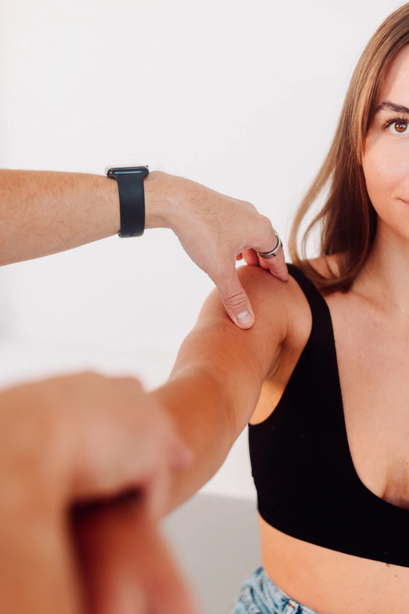

Łokieć tenisisty to jedno z najczęstszych (i niezwykle dokuczliwych) schorzeń przeciążeniowych w obrębie stawu łokciowego, dotykające zarówno sportowców, jak i osoby wykonujące powtarzalne ruchy w pracy zawodowej. Przeciążenie i mikrourazy ścięgien mięśni prostowników nadgarstka prowadzą do przewlekłego bólu oraz ograniczenia ruchomości. Wczesna diagnostyka i odpowiednie metody leczenia pozwalają na szybki powrót do pełnej sprawności, o czym możesz przekonać się jako pacjent Uzdroviska w Poznaniu.
Łokieć tenisisty to stan zapalny nadkłykcia bocznego kości ramiennej, wynikający z przeciążenia mięśni prostujących nadgarstek. Schorzenie to najczęściej dotyka osób wykonujących powtarzalne ruchy nadgarstka i przedramienia. Choć nazwa sugeruje związek z tenisem, dotyka ono także informatyków, mechaników, fryzjerów i osoby pracujące fizycznie. W przeciwieństwie do łokcia golfisty, który obejmuje stronę przyśrodkową łokcia, łokieć tenisisty dotyczy strony bocznej.
Objawy łokcia tenisisty rozwijają się stopniowo i obejmują:
Jeśli występuje u Ciebie którykolwiek z wymienionych objawów, a nie zareagujesz we właściwym momencie, możesz doświadczyć: przewlekłego stanu zapalnego, osłabienia mięśni oraz pogorszenia funkcji ręki. Dlatego nie czekaj i zgłoś się do Uzdroviska! Pod naszą opieką odzyskasz dobre samopoczucie oraz sprawność.
Do głównych przyczyn łokcia tenisisty należy:
W Uzdrovisku w Poznaniu oferujemy specjalistyczne ćwiczenia i programy fizjoterapeutyczne, które pomagają w skutecznym leczeniu łokcia tenisisty. Obejmują one:
Regularna rehabilitacja łokcia tenisisty jest podstawą w procesie leczenia i zapobiega przewlekłym problemom bólowym. Dlatego nie zwlekaj i nie odkładaj wizyty na później. Jesteśmy gotowi, aby Ci pomóc.
W Uzdrovisku w Poznaniu znamy i wdrażamy skuteczne metody terapii, pomagające w redukcji bólu i przywróceniu sprawności naszym pacjentom.
Masaż leczniczy
Masaż leczniczy pomaga zmniejszyć napięcie mięśniowe, poprawia ukrwienie i przyspiesza regenerację tkanek. Jest to jedna z podstawowych metod wspierających leczenie łokcia tenisisty.
Hirudoterapia
W niektórych terapiach fizjoterapeutycznych pacjentom w Uzdrovisku w Poznaniu pomaga hirudoterapia, czyli terapia pijawkami. Zabieg regeneruje tkanki, łagodzi ból i pomaga zmniejszyć stan zapalny.
Suche igłowanie
Również suche igłowanie stosowane w Uzdrovisku w Poznaniu pomaga rozluźnić mięśnie, zredukować ból w obszarze łokcia tenisisty oraz zwiększyć zakres ruchu. Pacjent, który ma stymulowane procesy regeneracyjne może pod opieką naszego fizjoterapeuty szybciej odzyskać sprawność.
Terapia manualna
Indywidualnie dobrana terapia manualna pozwala na mobilizację stawu łokciowego i pracę na strukturach mięśniowych, pomagając w zmniejszeniu dolegliwości bólowych oraz poprawie funkcji ręki.
Terapia narzędziowa
Wykorzystujemy specjalistyczne narzędzia do pracy z tkankami miękkimi, które pomagają w regeneracji i redukcji napięć.
Rehabilitacja
Nasze działania obejmują ćwiczenia wzmacniające i rozciągające, które pomagają w odbudowie funkcji kończyny i zapobieganiu nawrotom schorzenia. Jeśli zmagasz się z bólem łokcia tenisisty, skorzystaj z profesjonalnej diagnostyki i terapii w Uzdrovisku w Poznaniu - czekamy na Ciebie.
Co mówią o nas pacjenci